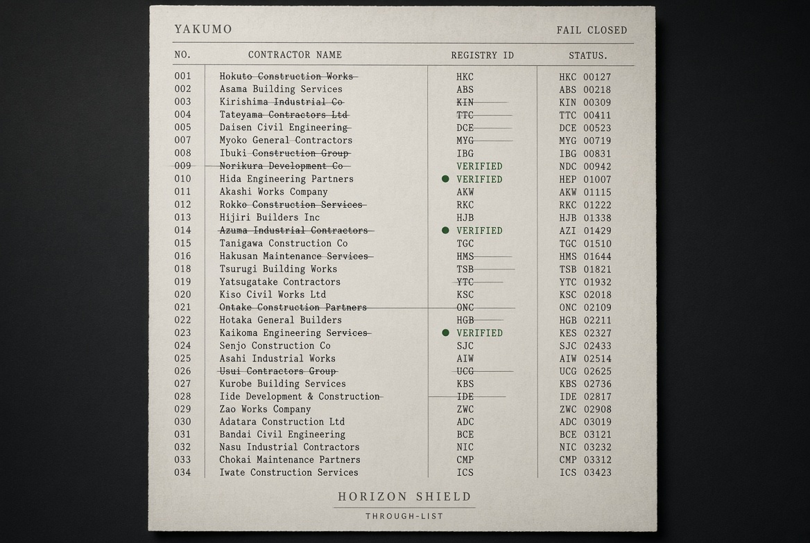

Yakumo is a contractor mall that lists only shops that passed a fairness check. It is the contractor side of HORIZON SHIELD. Nobody buys their way onto it, and nobody pays us a referral fee to be there.Yakumo は、公正さのチェックを通った工事店だけを載せる工務店モールです。HORIZON SHIELD の施工者側の入口。掲載枠はお金で買えず、送客料も一切いただきません。

YAKUMO THROUGH-LIST · struck entries did not pass · green marks passed · fail closedYAKUMO THROUGH-LIST ／ 取り消し線＝不合格 ／ 緑＝合格 ／ フェイルクローズド
One gate, and it is not about who you know.入口はひとつ。誰の知り合いか、ではありません。
A shop applies.工事店が申し込む。 It brings a real, recent estimate, not a brochure. パンフレットではなく、実際に出した見積もりを1枚持って。
KIRA checks it against open cost data.KIRA がオープンな原価データに照らす。 Each line is measured against JCCDB, the open construction cost database. The math has to hold. 各明細を、オープンな建設原価データベース JCCDB に当てて検算する。数字が合うことが条件。
If it holds up, the shop is listed as verified.通れば、検証済みとして掲載。 If it does not, the shop is simply not listed. No exceptions bought. 通らなければ、載らない。それだけ。例外は売っていません。
FAIL CLOSED · when the check cannot pass, the answer defaults to not listed, never to a benefit of the doubt.フェイルクローズド ／ チェックが通せないときは、初期値が「載せない」。疑わしきは通さない。
Why the list looks like thatなぜこんなリストなのか
It is called a through-list because you can see through it. Entries that did not pass are struck out and left on the page, not quietly deleted. The checker holds itself to the same measure it applies to others, and its own row is published unchanged.透けて見えるから「スルーリスト」。不合格になった名前は、こっそり消さずに取り消し線を引いてページに残します。物差しは全員に同じ。チェックする側にも同じ物差しを当て、自分の行もそのまま公開します。
No pay to appear掲載はお金で買えない
Listing is earned by passing the check, not by a fee or a referral kickback.掲載はチェック通過で得るもの。掲載料や送客料では得られません。
Anyone can recompute it誰でも検算できる
Verdicts rest on open data and a fixed method, so a third party can redo the math.判定はオープンデータと固定の手順に基づくので、第三者が同じ計算を再現できます。
Failures stay visible不合格も見える
Struck rows are part of the record. Transparency is the product, not the marketing.取り消し線の行も記録の一部。透明性そのものが商品です。
Buyer first買い手のための入口
Yakumo answers to the person paying for the work, not to the person selling it.Yakumo が向くのは、工事代金を払う人。工事を売る人ではありません。